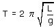

| Reloj de péndulo Un reloj consiste en un péndulo que oscila y un contador de os-cilaciones. El intervalo de tiempo que indica el reloj es el produc-to del número de oscilaciones por el período de estas  La longitud del péndulo se ajusta para que el período sea
2 s (Se dice: bate el segundo). |